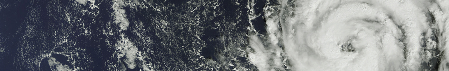
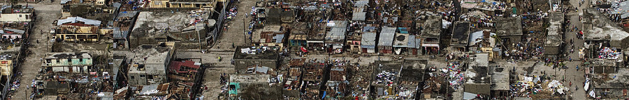
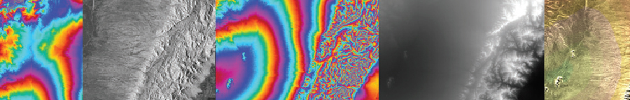

PROGRAMA
Ecología de Regiones y Paisajes (ex Ecología Regional plan84 y Ecología de Paisajes y Regiones plan19) y curso de posgrado Fundamentos de la Ecología de Paisajes y Regiones (5ptos, 160hs)
III – INTRODUCCIÓN A LOS SISTEMAS DE INFORMACIÓN GEOGRÁFICA

Definiciones de los Sistemas de Información Geográficos. Los componentes y las funciones de los Sistemas. Formas de representar y almacenar la información espacial en estos sistemas. El ordenamiento de la información. Cómo se almacena la información espacial en los Sistemas de Información Geográficos. La estructura de los archivos: el archivo vectorial, las grillas y las imágenes, ventajas y desventajas de cada uno. Uso de programas informáticos con mayor aceptación para los Sistemas de Información Geográficos.
IV – INTRODUCCIÓN A LAS HERRAMIENTAS DISPONIBLES PARA LA INCORPORACIÓN, MANIPULACIÓN, GESTIÓN Y ANÁLISIS DE LOS DATOS ESPACIALES
Creación de bases de datos propias a partir de datos de campo con o sin GPS. Transformación de los datos a los distintos sistemas de referencia. Registro de fotografías aéreas y/o mapas digitalizados (escaneados). Incorporación de la información espacial desde estas fuentes. Incorporación de la información espacial desde fuentes externas. Herramientas: cálculos de área, perímetro, distancia, densidad, áreas de influencia (áreas buffer) y contigüidad.
V – METODOLOGÍAS PARA LA REGIONALIZACIÓN: IDENTIFICACIÓN DE ESPACIOS GEOGRÁFICOS HOMOGÉNEOS
La complejidad del espacio geográfico en cuanto al número de variables y sus posibles interacciones. La ambigüedad del criterio de homogeneidad en relación a la escala espacial y del objetivo de la regionalización. La regionalización del espacio geográfico en función del uso y el manejo de los recursos naturales. Variables de delimitación y variables de caracterización. Aproximaciones cualitativas y cuantitativas: enfoque genético, paisajístico y paramétrico. Características de los enfoques. Inventario, clasificación, relevamiento y monitoreo de recursos naturales. Sistemas de clasificación de los ambientes (ej. ambientes terrestres y humedales).
VI – MAPAS DE RIESGO Y ORDENAMIENTO TERRITORIAL
 El riesgo ambiental y los mapas de riesgo. Definición, cuantificación y geolocalización del riesgo, las amenazas y vulnerabilidades. Herramientas de gestión territorial: ordenamiento territorial y planificación ambiental participativa. Nociones y objetivos del ordenamiento territorial. Las principales etapas y actores del proceso.
VII – PROBLEMÁTICAS ECOLÓGICAS ACTUALES A ESCALAS DE PAISAJE Y REGIÓN EN ARGENTINA
La ecología de paisajes y regiones aplicado a problemas actuales en nuestro país: cambios en el uso de la tierra y la agricultura y ganadería como sistemas ecológicos y transformadores. Algunas regiones de la Argentina como casos de estudio: Pampa, Delta y Chaco. Historia de la ocupación del territorio y sus conflictos pasados, presentes y futuros. Sus características naturales y productivas y el grado de ajuste entre la oferta natural y la demanda social.
VIII – ESTRUCTURA Y FUNCIONAMIENTO DE LOS PAISAJES Y LAS REGIONES
Nociones y herramientas para el estudio de las relaciones patrón-proceso. Los paisajes y sus elementos: sus características (topología y estructura) y funcionamiento.Índices y métricas de paisajes. Flujos de energía, materia y especies en el paisaje. Dinámica de los paisajes. Bordes y límites: interacciones entre ecosistemas adyacentes. Integridad del paisaje.
IX – GEOESTADÍSTICA, AUTOCORRELACION E INTERPOLACION ESPACIAL

Geoestadística y estadística espacial. Autocorrelación e interpolación espacial. Inversa distancia ponderada. Variable aleatoria regionalizada, covarianza, correlograma y semivariograma. Estacionariedad, Isotropía y anisotropía. Kriging.
X – MODELOS ESPACIALMENTE EXPLÍCITOS
Teoría y aplicación de los modelos de distribución de especies, modelado de nicho y modelos de aptitud de hábitat a distintas escalas espaciales. Modelos de dispersión de fauna y conectividad del paisaje usando modelos de costo de pasaje. Modelos neutrales. Modelos espaciales dinámicos. Aplicaciones.
XI – INTRODUCCIÓN A LA TELEDETECCIÓN
Sistemas de observación de la superficie terrestre. Teledetección satelital. Bases físicas de la teledetección. Los datos, el espectro electromagnético y su contenido de información: mecanismos de interacción entre la señal y los objetos de la superficie. Sistemas satelitales (ópticos, microondas (pasivas y activas), térmicos, laser, hiperespectrales): actualidad y futuro. Inventario, relevamiento y monitoreo de ecosistemas: clasificaciones supervizadas y no supervisadas. Evaluación de los productos de teledetección. Monitoreo de parámetros biofísicos de los ecosistemas. Tipo y calidad de productos de libre acceso: MODIS (LAI, EVI, FPAR, coberturas) y NOAA (series de tiempo de NDVI).